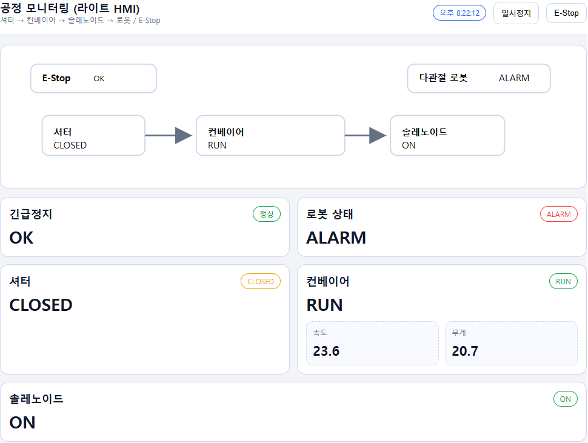
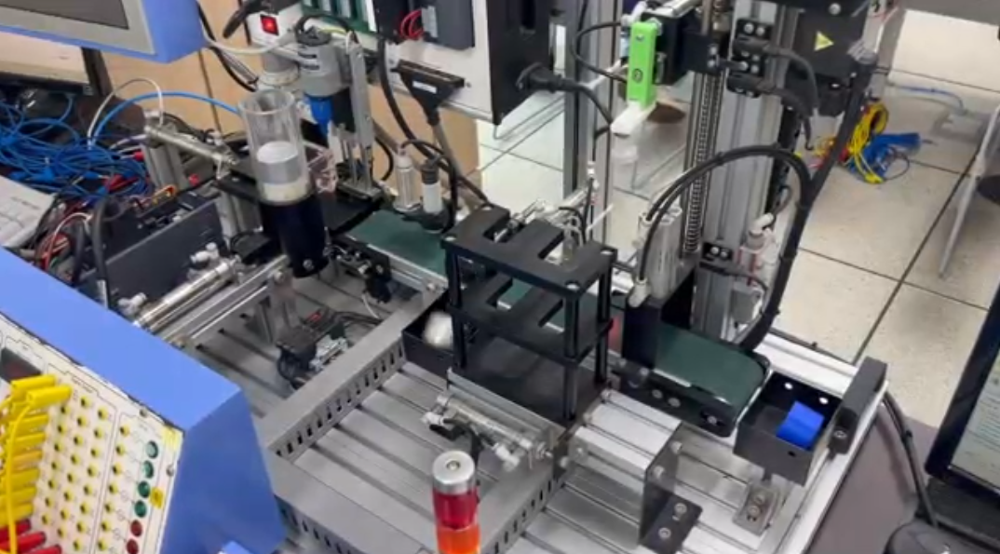
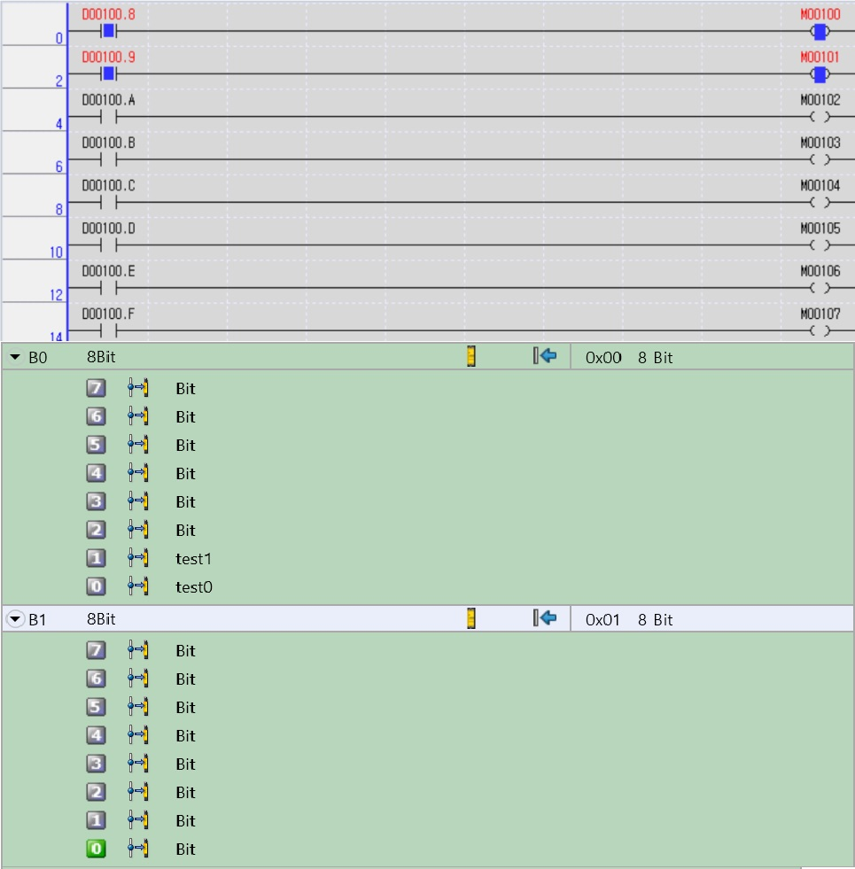

실외 주차장은 눈이 쌓이거나, 차량에서 떨어진 오일, 먼지, 낙엽 등으로 쉽게 더러워질 수 있다. 이러한 오염은 미관상의 문제, 세균, 미끄럼 사고와 같은 안전 문제로 이어질 수 있다.
따라서 D 팀은 아직까지 실생활에 널리 활용되고 있지 않는 환경인 "주차장"에 초점을 맞춰 새로운 아이디어를 접목시켜보고자 주제를 선정하게 되었다.
🚗 시나리오 (색상 기반 시각 인식을 활용한 주차 공간 감지 및 청소 시작 시스템)
주차 공간은 총 6칸으로 구성되어 있으며 각 칸 바닥에는 서로 다른 색상의 십자(+) 테이프가 부착되어 있다.
노트북 카메라를 이용해 주차장 전체를 촬영하고, 영상 내에서 각 칸의 십자 모양과 색상을 인식하여 주차 여부를 판단한다.
차량이 주차되어 있으면 색깔로 된 + 모양이 가려지기 때문에 "주차 불가"로 인식되고 모양이 보이면 "주차 가능"으로 판단한다.
스마트폰 화면에는 주차칸의 상태가 표시되며, 사용자는 이를 통해 청소 가능 여부를 "실시간"으로 확인할 수 있으며 "주차 가능" 상태가 있을 경우 스마트폰의 버튼을 눌러 청소 로봇을 제어 및 작동 시킬 수 있다
⚙️ 필자 주요 작업 내용
ROS2의 핵심 기능을 활용해 터틀봇3를 실제로 움직이고, 회전하고, 멈추고, 오염된 구역까지 주행하도록 만들고 제어한다.
구현 프로그램:
Flask 웹 기술을 활용한 터틀봇, 주차장 원격 제어
OpenCV 기반 실시간 색상 및 십자(+) 모양 검출 및 동시에 인식하는 프로그램 + 검출 내역을 외부 서버 (Flask 웹서버)로 전송
주차장 청소를 위한 2가지 방법 검토:
방법 A: 내비게이션을 활용해 맵을 읽고, 출발 지점과 목적 지점의 각 Waypoint 노드 구현 및 이동
방법 B (채택): 흐트러짐이 없는 정밀 주행에 관련된 기술 구현
오도 메트리(Odometry) 기반 자세 추정
Lidar 기반 거리 인식
비례 제어 (각속도 보정)
상태 기반 스텝 제어 (스텝 단위로 제어)
오차 보정
팀원이 제작한 터틀봇3 본체에 아두이노를 추가 장착해 외부 모터 구동을 파이썬 코드와 연동해 제어
🔧 문제 상황 및 해결 과정
❌ 내비게이션 기반 주행의 정밀도 부족
문제점: ROS2 내비게이션 패키지를 활용했으나, 실제 주행 환경에서 정밀도가 떨어져 원하는 위치에 도달하지 못해 적합하지 못함
원인 분석: 터틀봇3 하드웨어 자체의 성능 한계 및 통신 지연으로 인한 위치 추정 오차
해결 방안: 좌표 기반 주행(B 방법)을 채택하여, 경로를 직접 정의하고 각도 기준으로 명확한 패턴 주행 구현하여 정밀도 향상
❌ 반복 주행 시 오차 누적 문제
문제점: B 방법 적용 후 초기에는 정상작동했으나, 두 번째 실행부터 오차가 누적되어 로봇이 정확한 위치로 이동하지 않음
원인 분석: 바닥 마찰력 차이, 각도 오차, 반복 실행 간 오도 메트리 누적 오차
해결 방안: 오도 메트리 기반 초기 자세 추정 및 각도 기준 설정, 라이다 거리 값 기반 정확한 직진 거리 확보, 회전 시 각속도 보정 및 오차 허용 범위를 적용해 회전 정밀도 개선 및 누적 오차 감소
❌ 주차장 내 차량 인식 문제
문제점: 사용자가 어떻게 주차장 내 차량을 인식하고 청소 대상 구역을 식별할 것인가?
해결 방안: 상단에서 촬영 가능하도록 노트북 카메라를 활용해 주차장 전체를 비추어 CCTV 대체로 활용. 각 주차면에 십자(+) 형태의 컬러 테이프 부착. OpenCV를 활용하여 색상 + 십자 형태의 모양을 동시에 인식함으로써, 단순 색상 구분에서 발생할 수 있는 오류 문제를 해결
🏆 성과 및 결과
±3cm 이내의 위치 오차로 정밀한 회전과 직진 보정으로 정밀한 청소 경로 주행 구현
ROS2와 아두이노 간 시리얼 통신 성공률 90% 이상 달성 (연속 10회 테스트 기준으로 9회 성공)
주행 노드를 반복해도 안정적인 동작 유지, 재실행 시에도 초기화 및 동작 오차 없음
스마트폰에서도 로봇 원격 제어가 가능하며 웹 UI를 통해 청소 모션 시작/정지 이동 등 직관적으로 조작 가능하도록 구현
💡 기대 효과
별도의 ROS 명령이 없어, 처음 사용자도 손쉽게 사용할 수 있음. 처음 사용자도 손쉽게 사용할 수 있기 때문에 이것을 실제 주차장에 적용할 경우, 청소 로봇을 사용자 요건에 따라 자율적으로 운용 가능
예를 들어, 마트나 대형 물류센터에서는 소형, 중형 등 물건의 이동과 운반이 빈번하므로 보다 견고한 하드웨어에 운반체를 추가하여 청소뿐만이 아니라 간단한 물품 운반 작업도 가능하도록 사용성을 확대할 수 있다.
🚀 발전 방향
앱 형태로 개발하여 알림 기능 및 예약 기능 추가
음성 제어 기능 "1번 주차칸 청소해 줘"을 넣어 챗봇과 연계해 편의성 향상
터틀봇 협력 시스템 구축 → 연속적인 청소 작업 수행
라이다와 카메라 데이터를 활용한 정밀한 장애물 회피 기능 구축
시간 기반에서 거리 기반 주행 제어로 전환
로봇 상태 시각화를 위한 대시보드 구축
공정 모니터링 시스템 구축

공정 모니터링 대시보드 (예시 화면)
1. 프로젝트 개요
LS산전 PLC 기반 설비에서 발생하는 공정 데이터를 실시간으로 수집하고, 운영자가 직관적으로 공정 상태를 확인할 수 있도록 데스크톱 기반 공정 모니터링 시스템을 설계·구현하였습니다. PLC → PC → Web UI → 데스크톱 앱까지 이어지는 End-to-End 구조를 직접 구성하여 전용 HMI 없이도 공정 모니터링이 가능하도록 개선하였습니다.
2. 개발 배경 및 문제 정의
전용 HMI 비용이 높고 UI 커스터마이징이 제한적이며 데이터 가공·확장이 어려움
현장에서는 PC 기반의 직관적이고 확장 가능한 모니터링 요구가 존재
해결: PLC 데이터 수집 → 소프트웨어 신호 처리 → 웹 UI 시각화 → 데스크톱 배포로 통합
3. 시스템 아키텍처
[ LS산전 PLC ]
│
(Modbus)
│
[ C# 통신 서버 ] --(PLC 데이터 수집, 공정 로직, 알람 생성)
│
(WebSocket)
│
[ HTML / JavaScript UI ] --(실시간 표시)
│
[ Electron ] --(데스크톱 패키징)
4. 주요 구현 내용
4.1 PLC – C# Modbus 통신
LS산전 PLC와 Modbus 통신을 통해 실시간 공정 데이터 수집. Coil/Register 매핑을 설계하여 PLC 내부 로직 의존도를 낮추고, 소프트웨어에서 공정 상태를 해석하도록 구조화하였습니다.
4.2 C# 공정 신호 처리 및 상태 로직
원시 데이터를 기반으로 운전 상태, 공정 진행 상태, 이상/알람 상태를 소프트웨어 로직으로 분리·처리하여 의미 있는 상태 신호로 재구성했습니다.
4.3 C# – HTML WebSocket 통신
C#을 WebSocket 서버로 구성하여 HTML 클라이언트에 실시간 Push를 구현 — Polling 대비 지연 최소화, 다중 항목 동시 업데이트 가능.
4.4 HTML / JavaScript UI
실시간 값 표시, 상태 색상 변화, 알람 시각화 등 현장 작업자가 쉽게 이해할 수 있도록 UI 설계 및 구현.
4.5 Electron 배포
Web UI를 Electron으로 패키징하여 Windows 데스크톱 애플리케이션으로 배포, 브라우저 없이 실행 가능하도록 함.
5. 기술 스택
PLC: LS산전 PLC · 통신: Modbus, WebSocket · Backend: C# (.NET) · Frontend: HTML/JS · App: Electron · OS: Windows
6. 기술적 난이도 및 해결 포인트
PLC 통신부터 UI까지 서로 다른 기술 영역을 연동
실시간성 요구가 있는 공정 데이터를 지연 없이 안정적으로 전달
PLC 의존도 감소 및 소프트웨어 중심 확장성 확보
7. 프로젝트 성과
전용 HMI 없이 PC 기반 공정 모니터링 환경 구축
공정 데이터 가시성 및 운영 편의성 향상
PLC 수정 없이 소프트웨어만으로 UI/로직 변경 가능
“PLC부터 데스크톱 UI까지 전체 흐름을 직접 설계·구현한 공정 모니터링 시스템”
자동 가공·이송·분류 공정 시퀀스 제어

공정 순서도 (투입 → 가공 ×2 → 이송 → 재질 판별 → 분류/저장)
프로젝트 개요 (Overview)
본 프로젝트는 자동화 설비에서 공작물의 투입부터 가공, 이송, 재질 판별 및 저장까지의 전 공정을 PLC 시퀀스 제어로 구현한 사례입니다. 센서 신호에 따른 조건 분기, 반복 제어, 타이밍 제어 및 인터락을 포함한 안정적인 제어 로직을 구성하였음.
공정 구성 및 흐름
공작물 투입 → 공작물 유무 확인
가공 공정: 공급 실린더 전진 → 가공 모터 회전 → 실린더 하강/상승 (2회 반복)
가공 종료 → 이송 공정: 공급 실린더 후진 → 송출 실린더 전진/후진 → 컨베이어 구동
재질 판별(금속/비금속) → 분류 및 저장(비금속: 저장 박스 / 금속: 흡착 패드+서보 리프트)
공작물 유무 재확인 후 공정 반복 또는 종료
핵심 제어 로직 (Control Logic Highlights)
조건 분기
공작물 유무 센서, 재질 판별 센서, 스토퍼 실린더 감지 신호 등을 기반으로 단계별 분기 처리 수행.
반복 제어
가공 공정을 2회 반복하도록 설계하였으며, 반복 횟수 조건 만족 시 다음 단계로 전이.
타이밍 제어
스토퍼 감지 후 2초 지연, 실린더 및 구동부 간 간섭 방지를 위한 지연 로직 등을 적용하여 안정성 확보.
인터락 및 안전 로직
컨베이어가 정지 상태일 때만 서보 리프트 동작 허용, 흡착 패드 ON 상태에서만 리프트 이동 허용 등 상태 기반 인터락을 적용하여 잘못된 순서 동작을 방지.
PLC 구현 방식
순차 제어 방식의 Step/State 기반 시퀀스 로직을 사용하여 각 스텝별 조건 만족 시 다음 스텝으로 전이하도록 구현했습니다. 주요 요소(실린더 전/후진, 서보 리프트 이동/원점, 컨베이어 구동, 흡착 패드 ON/OFF)를 명확히 분리하여 가독성과 유지보수성 향상. 사용 언어: LD(래더) 및 ST(Structured Text) 혼용.
공정 순서도 활용
PLC 코드 작성 전 공정 순서도로 흐름과 분기, 반복을 시각화하여 PLC 코드와 1:1 대응 가능하도록 설계했습니다. 이를 통해 개발 및 디버깅 시간을 단축하고 공정 변경 시 신속 대응 가능.
프로젝트 성과
실제 산업용 자동화 설비에 적용 가능한 시퀀스 제어 로직 구현
센서 기반 조건 분기 및 반복 제어 설계 경험 확보
인터락 및 예외 처리 로직으로 공정 안정성 향상
유지보수와 확장성을 고려한 PLC 프로그램 구조 설계
공정 설계부터 PLC 시퀀스 제어 구현까지 전 과정을 체계적으로 구성한 사례로, 조건 분기·반복·타이밍·안전 로직을 포함한 실무 중심의 자동화 제어 경험.
인공지능과 자동화가 융합되어 발전하고 있는 현재, 산업용 로봇인 ABB IRB1200 시리즈를 실생활에 적용할 수 있는 방법을 고민하던 중, 자주 방문하는 편의점에서 아이디어를 얻어 이번 주제를 선정하게 되었다.
🛒 시나리오 (주문, 결제 연동을 통한 IRB1200 로봇 제어 흐름)
사용자가 상품을 장바구니에 담고 결제를 진행하면, 해당 품목들은 Flask 내부 큐에 저장된다.
사용자가 결제하기 버튼을 클릭하면, cash 금액 정보가 Flask를 통해 로봇으로 전송된다.
이후 현장 결제 버튼을 누르면, HTML은 coinpass 신호를 대기한다.
로봇은 받은 cash 값과 공작물에 설정된 금액을 비교하여, 결제 금액이 충분할 경우 coinpass 신호를 Flask를 통해 HTML로 전송한다.
Flask는 내부에 저장된 장바구니 목록에서 물품을 하나씩 꺼내어 로봇에 전송한다.
로봇은 첫 번째 스낵 정보를 받으면 해당 스낵에 맞는 동작(무브)을 수행한다.
동작이 완료되면 로봇은 nextall 신호를 Flask에 전송하고, Flask는 다시 다음 스낵을 꺼내어 전송한다.
만약 로봇이 nextall 신호를 보냈는데 Flask 내부 큐에 더 이상 스낵이 없다면, Flask는 로봇에게 stopping 신호를 보낸다.
로봇이 stopping 신호를 정상적으로 수신하면, Flask는 clear 신호를 HTML에 전송한다. 그 결과, HTML 화면에는 "모든 상품 주문이 완료되었습니다"라는 표시가 나타난다.
⚙️ 필자 주요 작업 내용
HTML은 PC에서도 접속이 가능하지만, 모바일 환경에 최적화된 화면 디자인과 구성, 그리고 API를 제작하였다. 또한 Flask를 기반으로 서버를 구현하여 로봇으로 신호가 정상적으로 전달될 수 있도록 하였으며, RAPID에서는 이러한 신호를 정확히 수신하고 다시 정상적인 신호로 응답할 수 있도록 개발하였다.
구현 프로그램:
HTML UI 로직 및 디자인 구현 (사용자 인터페이스와 신호 전달 기능 개발)
Flask 서버 구축 (로봇과 웹 간 신호 송수신 구조 설계)
RAPID 프로그램 구조 개발 및 로봇 티칭 (신호의 정확한 수신 및 응답 처리 구현 및 정확한 위치 선정을 위해 로봇 티칭)
🔧 문제 상황 및 해결 과정
❌ 신호처리 문제
문제점: 로봇에서 coinpass 신호를 보내도 Flask에서 반응 없음, nextall 신호 처리 시 여러 스낵 동시 완료 발생(순차 처리 실패), coinpass 신호를 HTML에서 수신하지 못해 스낵 신호 전달 실패, 내부 큐 저장은 정확하지만 로봇에서 다른 스낵 작동, nextall 신호 타이밍 문제
원인: 로봇 시뮬레이션에서는 정확히 구동되었으나, 실제 로봇에 적용했을 때는 오류가 많았다. 이는 통신 문제 또는 명령이 누적되면서 병목 현상이 발생했고, 그로 인해 신호 간 경쟁 상태가 생긴 것이 원인으로 추정
해결 방안: Flask 상태 머신을 도입해 실시간 통신에서의 안정성을 확보하고 동시성 문제를 방지하였다
❌ RAPID 문자열 처리 문제
문제점: RAPID에서 개행 문자 "\"의 처리 방식이 정상적으로 작동하지 않아, 신호를 주고받는 데 어려움이 발생함
원인: 정확한 원인은 파악되지 않았으나, RAPID에서 개행 문자를 제대로 지원하지 않는 것으로 추정된다
해결 방안: 개행 문자 "\" 대신 세미콜론 ";"을 사용하여 Flask에서 RAPID로 신호를 전송하였고, RAPID에서는 해당 세미콜론을 제거한 뒤 신호를 인식하도록 처리
❌ 물건 이동 문제
문제점: 과자의 모양이 제각각이기 때문에, 현재 적용된 그립 방식만으로는 과자를 안정적으로 이동시키는 데 어려움이 많음
원인: 모양이 가지각색이기 때문에 IRB1200 부착된 그립 내에서 집기 어려움
해결 방안: 다관절 로봇에 부착 가능한 지게차 포크 형식으로 제작하여 물체를 들어 올릴 수 있게 하였고, 로봇 티칭을 툴 고정 좌표계로 하여 지게차 포크는 유지한 상태로 티칭 하였음
🏆 성과 및 결과
HTML 기반으로 개발하여 스마트폰에서는 QR코드를 통해 별도의 설치 없이 앱과 유사한 최적화 화면을 제공하였으며, PC에서도 화면 크기에 맞춘 최적화된 UI를 구현하였다
ABB 다관절 로봇(RAPID), 미쯔비시 PLC, Flask, HTML 간의 신호 송수신 로직을 설계 및 구현하여 90% 이상의 성공률을 달성하였다
원하는 상품을 정확하게 꺼낼 수 있으며, 모든 상품을 주문 완료한 이후에도 통신이 끊기지 않고 연속적인 주문이 가능하도록 하였고, 주문할 상품이 없을 경우 '나가기' 버튼을 통해 상점이 정상적으로 종료되도록 구현하였다
지게차 포크 방식의 들어 올림 구조를 적용하여 상품의 형태와 상관없이 안정적으로 꺼낼 수 있도록 개선하였다
💡 기대 효과
PC와 스마트폰 등 다양한 기기에서 QR코드 접속만으로 주문이 가능하며, 각 기기에 맞는 최적화된 환경을 제공하여 편리성을 높였다
ABB 다관절 로봇, 미쯔비시 PLC, Python 서버(Flask), HTML 간의 송수신 로직을 통해 자동화 공정 및 기기 간 연결성을 확보함으로써 자동화 공장과 로봇 분야에서 의미 있게 활용될 수 있다
편리성, 간편성, 비 복잡성, 무인화, 드라이브스루 방식의 특성을 바탕으로 실제 적용 시 비용 절감을 기대할 수 있으며, 무인 서비스에 익숙한 고객의 접근성을 높이고 사회 전반적으로 무인화 적응력을 향상시킬 수 있다
🚀 발전 방향
결제 시스템 고도화
현재는 일정 금액 이상 결제 시 시스템이 구동되도록 되어 있으나, 추후 잔돈 처리 기능을 구현
카카오페이, 토스 페이, 네이버페이 등 다양한 간편결제 API와의 연계를 통해 결제 편의성을 강화
예약 및 원격 주문 기능 추가
포트포워딩을 통해 언제 어디서든 주문할 수 있도록 하고, 사용자가 무인 편의점에 도착했을 때 즉시 물품을 수령할 수 있는 예약 시스템을 구현
로봇 성능 개선
현재는 로봇을 빠르게 처리 시 그립에서 물품이 떨어지는 문제가 있으므로, 속도 제어 및 안정성을 향상시켜 무인 편의점의 회전율을 높일 계획이다
AMR 연동제어 구현
OMRON AMR 연동제어 시연 영상
📋 프로젝트 개요
프로젝트명: OMRON AMR 연동 제어 구현 프로젝트
기간: 2025.08.21 ~ 2025.09.01
기술 스택: AMR (자율이동로봇), IRB1200 (6축 다관절 로봇), 서보모터, DC 모터, Arduino, ABB RAPID, Python Server, TCP/IP 통신, SolidWorks, Cura, 3D 프린팅, HTML
역할: 아두이노 프로그래밍 및 서버 간 연동, AMR 제어, 다관절 로봇 제어, HTML 인터페이스 개발
🎯 2팀 주제: AMR 창고 저장 및 분류 시스템
기존 공정은 일정 장소에서 물품을 구분·저장한 뒤, 필요시 AMR로 운반하는 방식이 대부분이었다. 그러나 본 프로젝트에서는 AMR이 직접 물품을 저장하고 분류하는 방식을 적용하였다.
이를 통해 완성품을 각 장소(A, B)로 운반할 수 있으며, HTML(앱) 인터페이스를 통해 사용자가 원하는 상품과 수량을 원하는 장소로 주문함으로써 JIT(Just-In-Time) 생산·공급을 실현하는 것을 목표로 하였다.
🚛 시나리오
AMR은 출발지점에서 출발하여 Arduino에 신호를 보내 차단기를 올리고, 다음 목표 지점에 도착하면 차단기를 내려 안전 통로를 확보한다.
AMR은 ABB 다관절 로봇 앞으로 이동하여 창고에서 물건을 빼는 모터와 컨베이어 DC 모터를 작동시키고 그립을 아래로 향하게 설정한 후, ABB 로봇에 신호를 보내 물건을 집도록 한다.
다관절 로봇은 집은 재료 물품을 재료 창고에 저장하고, 두 개의 물품이 모두 저장되면 준비된 컨테이너를 꺼내 AMR에게 전달한다.
AMR은 컨베이어와 창고 저장 작업을 수행하고 두 개의 물품을 모두 저장한 후 대기 장소로 이동하며, 대기 장소에서 HTML UI를 통해 사용자가 선택한 장소와 물품에 따라 물건을 꺼내 떨어트린다.
물품이 배송 완료되면 AMR은 ABB 로봇 앞으로 돌아가 물품을 재공급하고 다시 대기 장소로 이동하며, 종료 버튼이 눌리면 처음 시작 지점으로 돌아가 작업을 종료한다.
⚙️ 필자 주요 작업 내용
AMR과 6축 다관절 로봇, 아두이노, HTML을 연동하여 제어 프로그램 개발, 창고 구조 설계 및 3D 프린트를 통한 맞춤형 부품 제작
아두이노 기반 AMR 이동 경로 및 속도 제어, 창고 위치별 물품 적재, 분류, 배송 로직 구현
ABB RAPID를 활용한 픽 앤 플레이스(Pick & Place) 작업, AMR과 연동하여 물품 수령 및 배송 자동화
MG996R 서보모터를 이용한 물품 적재/분류 동작 구현, DC 모터를 이용한 컨베이어 이동 제어
Python 서버와 아두이노/로봇 간 TCP/IP 기반 실시간 명령 통신, 명령 수신, 상태 피드백 및 동작 완료 신호 송신 구현
웹 인터페이스를 통해 사용자 주문 입력, AMR 및 로봇 동작과 연동하여 원하는 장소에 물품 배송
SolidWorks를 활용한 부품 설계, Cura와 3D 프린터를 이용한 맞춤형 부품 제작 및 장착
🔧 문제 상황 및 해결 과정
❌ AMR 위치 정렬 문제
문제점: AMR이 ABB 6축 다관절 로봇과 물건을 주고받기 위해서는 로봇이 위치한 지점에 정확하게 또는 비슷하게 정렬되어야 한다. 하지만 지속적인 AMR의 위치 오차가 커서 물건을 정확히 주고받지 못하는 상황이 발생했다
원인 분석: 다관절 로봇 아래쪽은 유리 형태로, 유리는 빛을 투과하기 때문에 라이다의 레이저가 그대로 통과하여 뒤쪽 물체에서 반사될 수 있다. 이 과정에서 일부는 유리 표면에서 반사되고, 일부는 투과 후 뒤쪽에서 반사되면서 이중 반사나 신호 약화가 발생한다
해결 방안: 유리판을 흰색 판자로 가려, 레이저가 제대로 반사되도록 하였다
❌ 서보모터 위치 제어 문제
문제점: MG995 서보모터의 출력을 주고 시간 초로 출력을 끊어내는 방식으로 진행하다 보니 밀어내는 막대의 위치가 미세하게 틀어질 때가 있음
원인 분석: 각 창고(위치)와 물품 무게에 따라 필요한 동작 시간이 다르지만, 타이밍으로만 제어하면 오차가 발생할 수밖에 없다고 판단
해결 방안: 정밀한 시간 초 제어를 통해 일시적으로 문제를 해결할 수 있었지만, 다른 모터나 상황에서는 동일한 방식으로 적용하기 어렵다는 한계를 확인하였다
❌ 하드웨어 공정 복잡성 문제
문제점: 하드웨어 공정 과정이 지나치게 복잡하여 물건이 정확히 떨어지지 않거나 막히는 현상이 발생함
원인 분석: 제작 시 설계 과정을 생략하고 무작정 진행하여 각종 오류가 발생함
해결 방안: 처음 제작 단계에서 설계를 충분히 진행하고, 각종 가이드를 추가·수정하여 AMR 공정을 안정적으로 구현할 수 있었음
🏆 성과 및 결과
유리판을 흰색 판자로 가려 AMR이 ABB 로봇과 보다 정밀하게 물건을 주고받을 수 있게 되었음
RAPID, AMR, Arduino, HTML 시스템이 허브 앤 스포크 방식으로 정상 연동되어 신호를 안정적으로 주고받을 수 있었음
AMR이 물건을 정확히 저장·분류하고, HTML에서 원하는 상품을 선택하여 배송할 수 있는 시스템을 구현함
💡 기대 효과
RAPID, AMR, Arduino, HTML이 허브 앤 스포크 방식으로 연동되어 새로운 장치나 기능을 쉽게 확장할 수 있다
자동화 공장이나 일상생활에서도 적용이 가능하다. 또한, AMR에서 공정을 구성했기 때문에 공정을 이동·분리할 수 있어 유연성이 높고, 좁은 공간에서도 활용하기 적합할 것으로 보인다
🚀 발전 방향
AMR 및 로봇 협업 확대
다수 AMR과 다관절 로봇 간 협업 시나리오 개발 및 복잡한 공정에서도 적용 가능하도록 확장
데이터 기반 운영
DB 툴을 이용한 실시간 데이터 수집으로 물류 흐름 분석 및 작업 최적화
범위 확대
좁은 공간에서의 서비스 로봇 환경으로 적용 확대
LS PLC ↔ SICK Safety PLC · Modbus TCP 포트폴리오

LS PLC Ladder 스냅샷 (예시) — D000100 비트 매핑 참고용
아래는 LS산전 PLC와 SICK Safety PLC 간의 Modbus TCP 통신을 설계·구현한 실무 포트폴리오 요약입니다.
🔹 프로젝트 개요
목적: LS PLC에서 SICK Safety PLC로 Modbus TCP WRITE를 수행하고, Safety PLC 내부 로직에서 해당 값을 비트 단위로 안전 로직에 활용
역할 구조: LS PLC → Modbus Client, SICK Safety PLC → Modbus Server
배경 및 문제 정의
기존: SICK → LS 방향 READ는 구현 완료
요구: LS PLC에서 Safety PLC로 직접 WRITE 하여 Reset, Enable, 안전 상태 제어 수행
제약: Modbus TCP는 BIT 단위 WRITE 불가 — 반드시 16bit WORD 단위 송신
접근 방법 및 설계 전략
Safety Designer 측
테스트용 비트 생성: test0, test1 (Safety PLC 내부)
BIT를 직접 받지 않고 BYTE(B0)로 묶어서 처리 — Safety PLC는 B0를 하나의 숫자(INT)로 해석
데이터 구조 설계
Byte
Bit
의미
B0
bit0
Enabled
B0
bit1
Reset required
B0
bit2
Ready for reset
B0
bit3~7
미사용
Modbus TCP WRITE 설정 (LS PLC)
FEnet → P2P 채널 생성
Modbus TCP Client 설정 — Unit ID = 1 (Safety PLC Server와 일치 필요)
Slave Address: 0x40100, WRITE 모드 사용
예: Ladder에서 D01000 값을 1 → 2 → 3 → 0 순환시켜 Safety PLC에서 비트 변화 확인
핵심 이슈: 바이트 순서(Byte Order)
문제: LS PLC에서 256 (0x0100)을 WRITE 했는데 예상과 달리 B0 bit0 ON 발생
원인: Modbus는 16bit WORD 단위 통신이나 바이트 매핑(상위/하위 바이트)이 장비마다 다름 — 본 환경에서 WORD = 0xHHLL이며 B0 = HH(상위 바이트), B1 = LL(하위 바이트)
값 매핑 규칙 (실무 적용)
실제 동작 표:
1 → 0x0001 → B1 bit0
2 → 0x0002 → B1 bit1
16 → 0x0010 → B1 bit4
128 → 0x0080 → B1 bit7
256 → 0x0100 → B0 bit0
512 → 0x0200 → B0 bit1
32768 → 0x8000 → B0 bit7
따라서 B0 비트 제어는 256 단위, B1 비트 제어는 1~128 단위 값을 사용해야 함.
Safety PLC 로직 구조 (요약)
기본 시퀀스: EMO 눌림 → 모든 출력 OFF → EMO 해제 → Reset required = ON → Ready for reset = ON → Reset 입력 → Enabled = ON → Reset required/Ready for reset = OFF
상태 플래그: Enabled, Reset required, Ready for reset
READ 데이터 해석
Modbus READ는 16bit WORD로 반환. Safety Designer의 B0는 상위 바이트(HI).
예: D100 = 0x0300 이면 HI=0x03 → B0 = 0x03, LS PLC는 D00100.x 형태로 바이트/비트 추출
트러블슈팅 & 실무 노하우
LS PLC 프로그램 WRITE/Reset 작업은 반드시 STOP 상태에서 수행 (XG5000에서 실행)
통신 진단: FEnet 모듈의 서비스/에러 카운트 확인
XG5000 모니터로 실시간 통신 상태 확인 권장
LS PLC와 SICK Safety PLC 간 Modbus TCP 통신을 설계·구현하였으며, WORD 단위 통신 제약과 바이트 순서 문제를 분석하여 안전 로직에서 BIT 단위로 활용 가능한 구조를 완성했습니다. EMO/Reset/Enable 등 실제 산업 안전 시퀀스에 적용 가능한 방식으로 검증 완료.